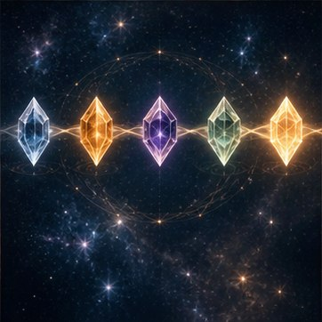

✦
Красота и образ
Уход, одежда, волосы, украшения, аромат, осанка.
Не идеальной.
Не удобной.
Не соответствующей чужим ожиданиям.
А собой.
40 карточек заботы о себе, которые помогают маленькими действиями возвращать внимание к себе и создавать жизнь, в которой тебе хорошо.
ХОЧУ КАРТОЧКИТы можешь быть прекрасной женой. Заботливой мамой. Хорошим специалистом. Надежным другом.
Успевать. Решать. Помогать. Заботиться.
И однажды заметить, что в собственной жизни для тебя самой осталось совсем немного места.
Красивое платье ждет подходящего случая. Украшения лежат в коробочке. На отдых нет времени. Свои желания постоянно можно перенести.
А вопрос «Чего хочется мне?» становится неожиданно сложным.
Ты просыпаешься и не начинаешь день с претензий к своему отражению. Ты смотришь на себя с теплом.
Выбираешь одежду не только потому, что она практичная, а потому что тебе нравится, какая ты в ней.
Ты чувствуешь свое тело. Знаешь, когда ему нужен отдых, движение, прикосновение или удовольствие.
Ты можешь сказать: «Я хочу». И не объяснять, почему твое желание достаточно важно.
Ты можешь быть нежной, сексуальной, яркой, спокойной, игривой, сильной. Разной. Живой. Настоящей.
Каждое такое действие кажется маленьким. Но вместе они создают совершенно другое отношение к себе: «Я есть в своей жизни. И я для себя важна».

40 красивых напоминаний о женщине, которую мы так часто откладываем на потом. О себе.
Посмотри на себя с любовью. Надень украшение без повода. Пригласи себя на свидание. Разбуди чувственность. Создай себе маленькую роскошь. Спроси тело, чего оно хочет.
Эти карточки не рассказывают, какой женщиной ты обязана стать. Они возвращают другой вопрос: «А какой хочется быть мне?»
И постепенно ты начинаешь слышать ответы.
Уход, одежда, волосы, украшения, аромат, осанка.
Сон, движение, вода, питание, прикосновения.
Ощущения, привлекательность, удовольствие.
Способность замечать свое «хочу».
Приятное не как награда, а как часть жизни.
Создавать место для себя сознательно.
Красота вокруг и маленькие личные традиции.
«Я сделала это для себя ♡»
Не «надо выпить воду», «надо сделать маску», «надо потренироваться», «надо выглядеть красиво», «надо быть женственной».
«Я ВЫБИРАЮ ЗАБОТИТЬСЯ О СЕБЕ, ПОТОМУ ЧТО Я ДЛЯ СЕБЯ ЦЕННА».Больше уверенности в себе
Принятие своего тела
Удовольствие от обычных дней
Больше чувственности
Больше энергии и вдохновения
Контакт со своими желаниями
Внутреннее спокойствие
Ощущение собственной ценности
Больше красоты в повседневности
Привычка учитывать себя
Ты много отдаешь другим и часто оставляешь себя последней.
Хочешь вернуть ощущение женственности и чувственности.
Хочешь снова нравиться самой себе.
Быстрее замечаешь недостатки, чем достоинства.
Давно не спрашивала себя, чего действительно хочешь.
Хочешь больше удовольствия, красоты и легкости в обычной жизни.
Или у тебя все хорошо, но хочется еще больше контакта с собой.
Не обязательно сначала потерять себя, чтобы начать выбирать себя.
По одной карточке. По одному маленькому действию. День за днем.
Пока фраза «Я сделала это для себя» не превратится в: